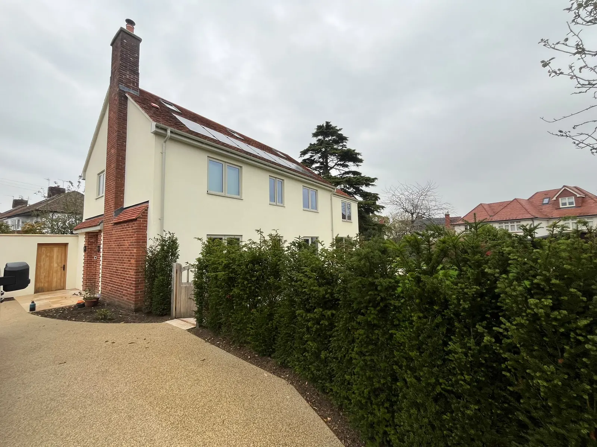
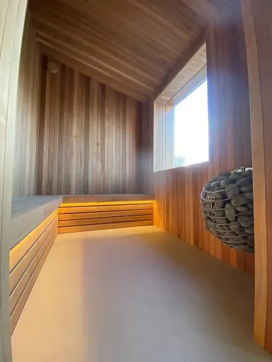

Refurbishment
Complete refurbishment of existing houses, including new floors and staircases, kitchens, bathrooms and finishes, inside and out.
Project portfolio
Building excellence. Bringing designs to life.
Residential construction, refurbishment and restoration, carried out with care for the design and the building.

Company introduction
Cleveland Construction delivers residential construction, refurbishment and restoration projects with a focus on craftsmanship, technical coordination and respect for architectural design. Our portfolio spans listed buildings, substantial extensions, structural alterations, bespoke new homes and leisure facilities.
We work collaboratively with architects, consultants and clients to translate design intent into carefully executed buildings, balancing quality, practical construction requirements and commercial considerations.

Services
The same disciplines run through the portfolio: refurbishment, structural change, services, finishes and the management of the job.
Complete refurbishment of existing houses, including new floors and staircases, kitchens, bathrooms and finishes, inside and out.
Sensitive restoration of listed houses, farmhouses and townhouses: heritage windows, timber repairs, oak laths and lime plaster.
Two-storey extensions, extra storeys, timber-framed additions and new openings in load-bearing walls, with temporary support where it is needed.
New dwellings taken from foundations and drainage through to a completed home, including traditional materials such as Bath stone.
Full rewires, new plumbing, heating upgrades and air source heat pumps, coordinated in both modern and historic buildings.
Day-to-day coordination with architects, consultants and clients, from enabling works and groundworks through to handover.
Our people and expertise
Office enquiries are looked after by Sarah Waldron, Office Manager. Project leadership and commercial oversight sit with the team below.
22
Richard Waldron, Director
Richard spent 16 years as a director of a previous construction company before establishing and leading Cleveland Construction for the past 6 years. That background brings practical construction leadership, project coordination and a detailed understanding of quality workmanship and productive relationships with design teams.
40+
Quantity Surveyor
Extensive commercial experience supporting cost planning, procurement, financial oversight and informed decision-making throughout project delivery.
Together
Working with architects
Leadership and commercial experience support clear communication, careful coordination and attention to architectural detail, particularly where heritage fabric, complex structural work and high-quality finishes need considered execution.
Selected projects
Seven projects from the portfolio, from whole-house refurbishment to a new single-storey home and listed-building repairs.
| Project | Value | Outline |
|---|---|---|
| Chalfont | £1.516 million | Refurbishment, two-storey extension and an added storey |
| Northend | £1.245 million | Timber-framed extension on a sloping site |
| The Old School House | £887,000 | Listed residence and cottage |
| Claremont House | £360,000 | Bespoke single-storey home |
| St James Square | £366,000 | Listed townhouse — photographs to follow |
| Purlewent Drive | £230,000 | Refurbishment and high-level extension |
| Marlborough Buildings | £120,000 | Listed townhouse restoration |
01
Project value£1.516 million
Complete refurbishment of the existing house, with a substantial new two-storey extension and an additional storey added to the original structure, significantly increasing its size and accommodation.
The roof was replaced and the external walls upgraded with new insulation and a rendered finish. Internally, new floor structures and staircases created a modern, functional layout.
All mechanical and electrical services were replaced, with a full rewire and new plumbing, alongside new kitchens, bathrooms and high-quality finishes.
External works included extensive hard and soft landscaping, with new access arrangements, paving, terraces and garden features.
02
Project value£1.245 million
Partial demolition of the existing dwelling, followed by a substantial new timber-framed extension built over split levels, effectively doubling the original footprint on a challenging sloping site.
Enabling works included extensive excavation, groundworks, retaining structures and new drainage to manage the site’s varying levels and surface and foul water.
The existing house was fully refurbished inside and out, with structural alterations, a reconfigured layout and high-quality finishes. All services were replaced, including a complete rewire, new plumbing and an air source heat pump for energy-efficient heating and hot water.
The result is a significantly enlarged, modern and energy-efficient family home.
03
Project value£887,000
Sensitive refurbishment of the existing listed residence, preserving its historic character while meeting modern living standards. Works included new floor structures, replacement heritage-style windows, refurbished bathrooms and a bespoke kitchen, with all services replaced: a complete rewire, new plumbing and an air source heat pump.
The detached cottage was stripped back to bare masonry following a comprehensive damp-proofing system, then fully rebuilt internally with new floors, linings, bespoke joinery, services and high-quality finishes.
Close coordination with conservation requirements and careful management of heritage materials and detailing maintained the architectural integrity of both buildings.
04
Project value£360,000
Demolition of an existing block of garages to make way for a new bespoke single-storey home, followed by site clearance and enabling works.
The new dwelling combines traditional materials with modern construction techniques, its natural Bath stone façade complementing the surrounding architectural character.
The project included all foundations, drainage, structural works, roofing, mechanical and electrical installations and internal fit-out, delivering a fully completed turnkey home.
External works included new access arrangements, hard landscaping and associated site works.
05
Project value£366,000
Full refurbishment of an existing listed townhouse, combining sensitive restoration with significant structural alterations to improve its layout and functionality while preserving its historic character.
New structural openings were formed through the rear load-bearing walls to improve access to external areas, requiring complex temporary propping and structural support to keep the building stable throughout.
All bathrooms were replaced and the mechanical and electrical services fully renewed, with a full rewire, new plumbing and upgraded heating integrated within the constraints of the historic structure.
St James Square is part of the portfolio. Pictures of the townhouse will be added to this space when they are available.
06
Project value£230,000
A comprehensive domestic refurbishment, including the construction of a substantial high-level extension carefully integrated into the existing embankment. The project involves the complete renovation and modernisation of the property, alongside significant structural works to create additional living space while making the most of the site’s unique levels and natural landscape.
The extension has been designed to work with the existing topography, requiring specialist groundwork, structural engineering and careful consideration of the surrounding embankment to ensure a seamless connection between the new and existing building.
07
Project value£120,000
A comprehensive refurbishment and sensitive restoration of an existing listed townhouse, with a strong emphasis on preserving the building’s historic character, original features and architectural heritage.
The project involves the careful repair and restoration of traditional oak laths, alongside specialist lime plastering using traditional materials and techniques sympathetic to the age and construction of the property.
Works include the meticulous removal and repair of deteriorated finishes, restoration of historic fabric and the application of breathable lime plaster to maintain the building’s natural moisture regulation and long-term structural integrity.
The refurbishment combines traditional craftsmanship with modern improvements, so the townhouse meets contemporary living standards while respecting its listed status and original architectural detailing.
Contact
For a residential project, a listed-building repair or a new home, contact Richard Waldron. Sarah Waldron, Office Manager, looks after office enquiries on the same details. There is no online form: email or call, and the message goes straight to the team.
Director
Office Manager